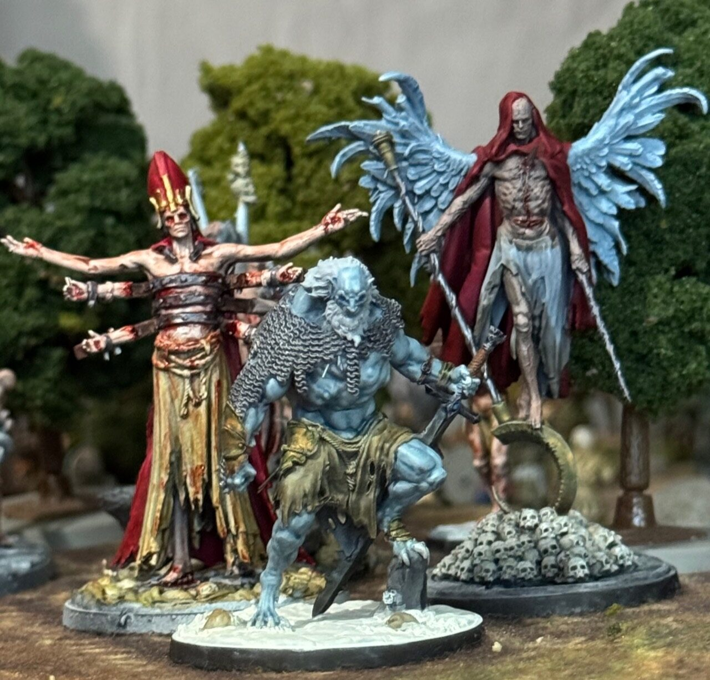
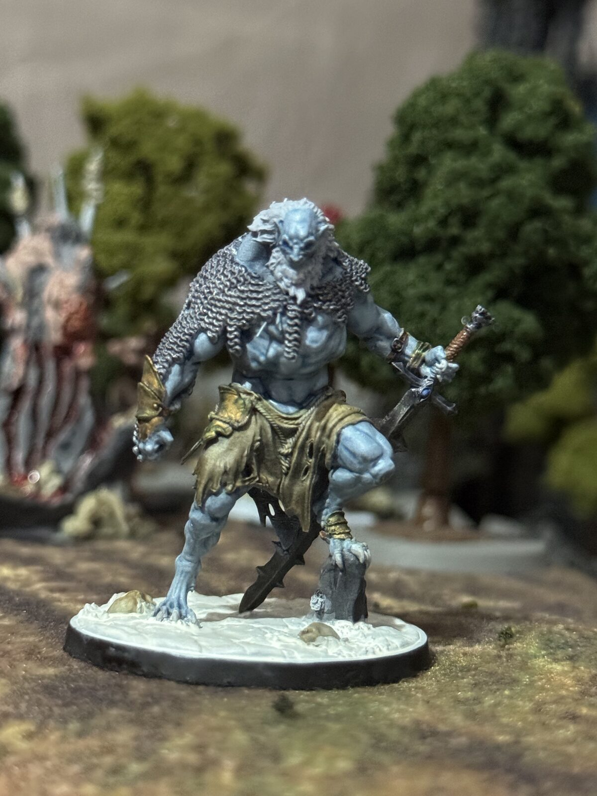
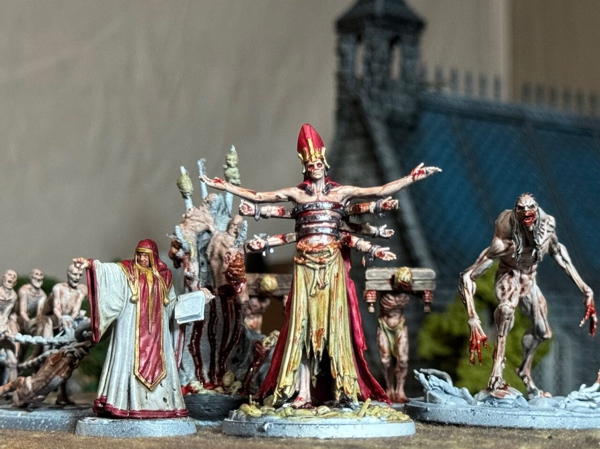
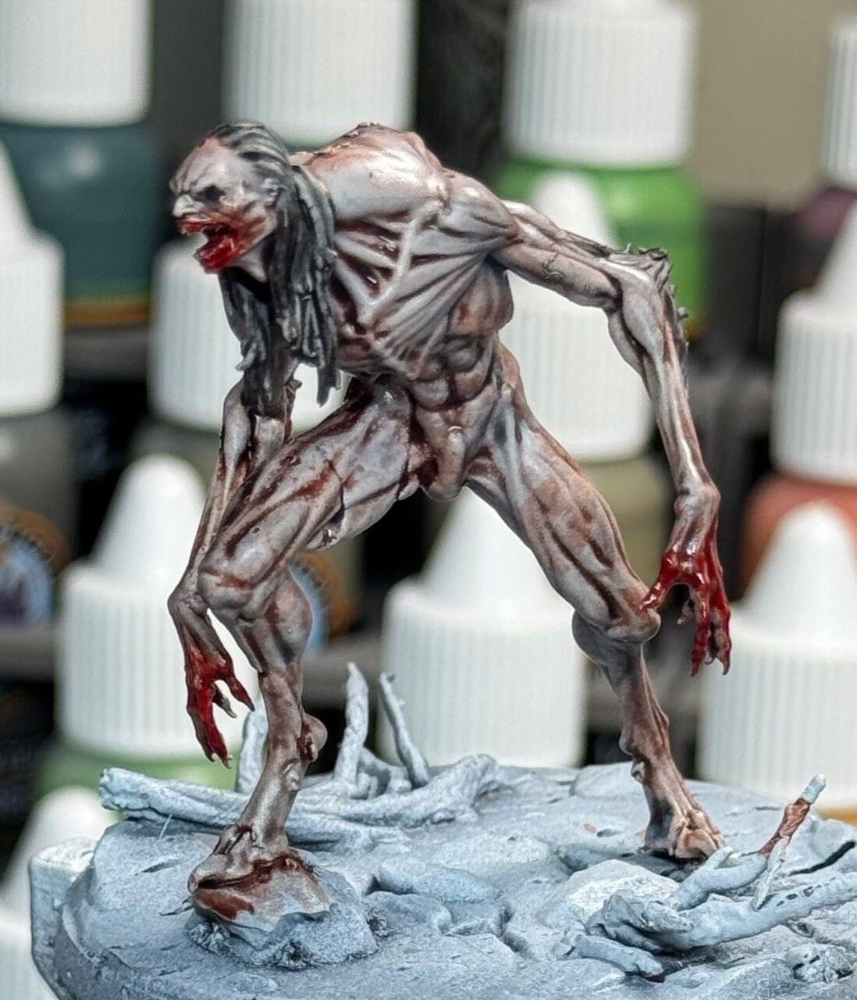
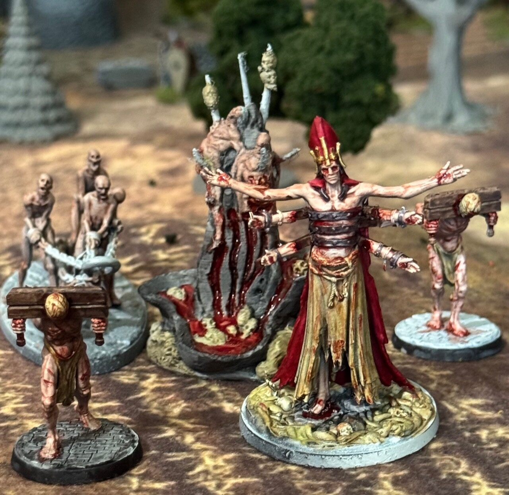
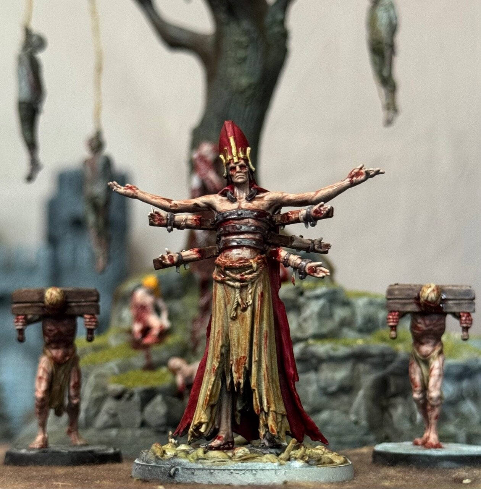
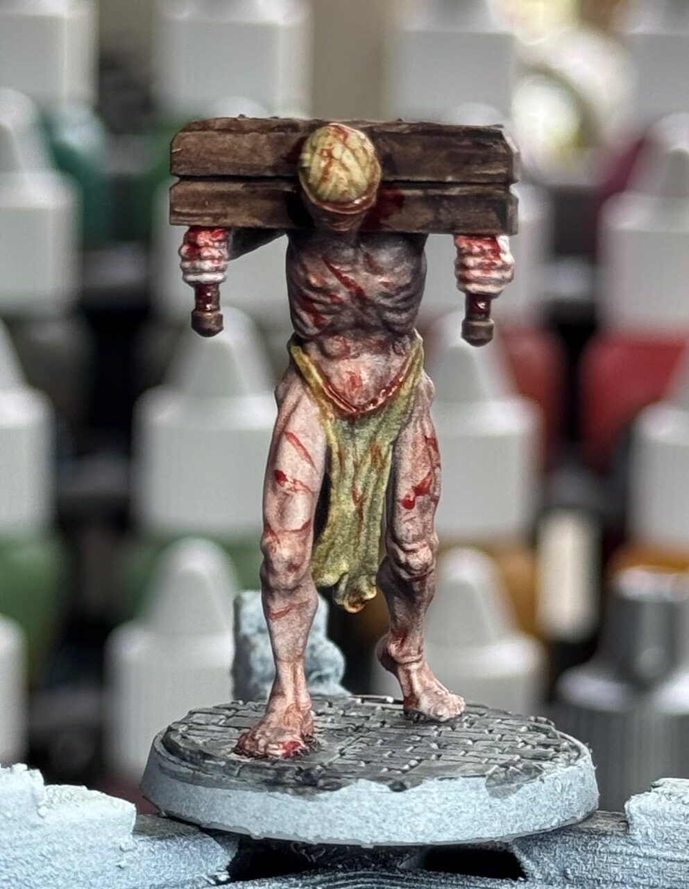
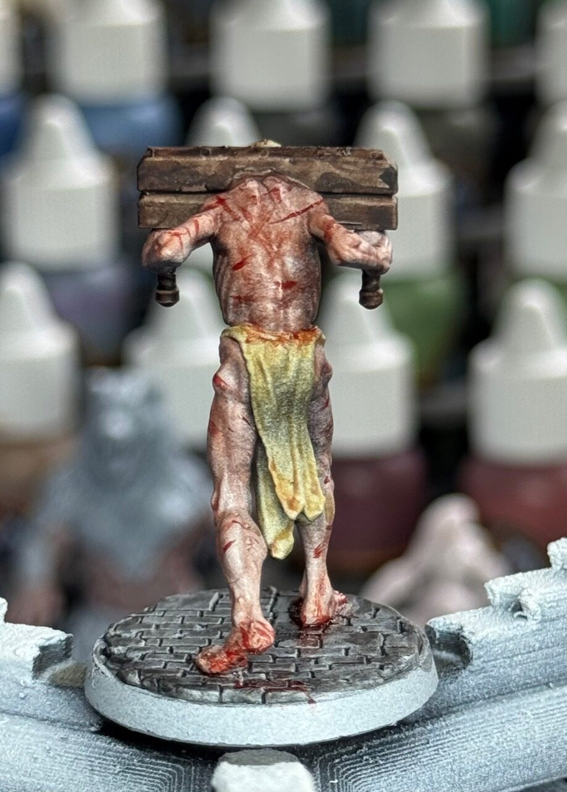

Every Fighter Has Weight
Compact forces make wounds, grudges, scars, and deaths matter from game to game.
Grimdark Viking warbands clash over blood debt, prophecy, faith, and the terrible promises warriors make before battle.
Black Oaths is designed for small warbands, memorable fighters, and battles that feel personal. A victory should feel costly. A death should feel like it belongs in a saga.
The rules are being shaped around dangerous choices, clear table action, narrative campaign hooks, and the pleasure of putting a painted warband under pressure.
Black Oaths lives through painted figures, cursed set pieces, and characters that look like they have already paid too much.








The game should reward nerve, positioning, oath-driven objectives, and the willingness to risk named fighters when the story demands it.
Compact forces make wounds, grudges, scars, and deaths matter from game to game.
Objectives are framed as sworn commitments, pushing players toward bold action.
Advancement, injury, relics, and reputation give the warband a history.
Distinct fighters and strong silhouettes keep the visual identity front and center.